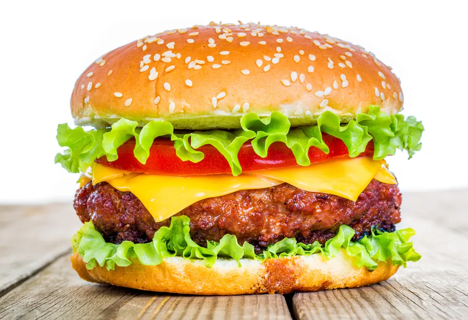

Hamburger

Description
This is a simple recipe for the classic hamburger with the option to add cheese and other toppings!
Ingredients
- 3lbs ground beef (80/20)
- 10 sesame buns
- 1 head of lettuce
- 3 tomatoes
- 3 onions
- Optional: 1 small pack of sliced American cheese
- Salt and pepper to taste
Steps
- Form ground beef into 1/4lbs patties
- Season patties generously with salt and pepper
- Grill on med high heat until charred on each side
- While meat is grilling, slice tomatoes and onions, and separate lettuce leaves
- Optional: Add cheese to patties on grill after flipping
- Assemble cooked patties and veggies onto patties